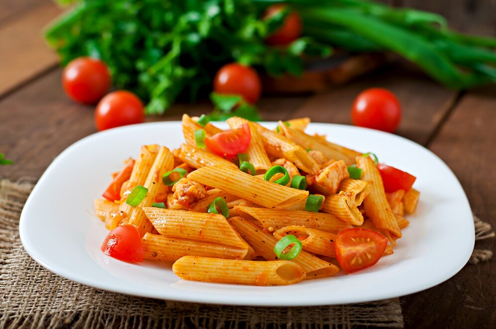

Chicken Pasta

Origin
Writing in the 2nd century, Athenaeus of Naucratis provides a recipe for lagana which he attributes to the 1st century Chrysippus of Tyana: sheets of dough made of wheat flour and the juice of crushed lettuce, then flavoured with spices and deep-fried in oil.[11] An early 5th century cookbook describes a dish called lagana that consisted of layers of dough with meat stuffing, an ancestor of modern-day lasagna.
A dictionary compiled by the 9th century Arab physician and lexicographer Isho bar Ali[14] defines itriyya, the Arabic cognate, as string-like shapes made of semolina and dried before cooking. The geographical text of Muhammad al-Idrisi, compiled for the Norman King of Sicily Roger II in 1154 mentions itriyya manufactured and exported from Norman Sicily:
Ingridents
- 6 tablespoons butter or margerine
- 1 onion, chopped
- 1 red pepper, chopped
- 1 yellow pepper, chopped
- 1 orange pepper, chopped
- 1 teaspoon garlic, minced
- 3 pounds boneless, skinless chicken breasts, cut into strips
- 1 tablespoon fresh tarragon, minced
- ¾ teaspoon salt
- ¼ teaspoon pepper
- 1¾ cup half-and-half
- 1 cup shredded mozzarella cheese
- ½ cup grated Parmesan cheese
- 1 (7-oz.) pkg. vermicelli, cooked
Steps To Prepare
- Melt butter in a skillet until sizzling; stir in onion, peppers and garlic. Cook over medium-high heat 2 to 3 minutes or until peppers are crisp-tender. Remove vegetables from skillet with a slotted spoon and set aside.
- Add chicken, tarragon, salt and pepper to skillet. Continue cooking, stirring occasionally, 7 to 9 minutes or until chicken is golden and tender.
- Add vegetables, half-and-half and cheeses to chicken mixture. Reduce heat to medium; continue cooking 3 to 5 minutes or until cheese is melted. Add vermicelli; toss gently to coat. Serve immediately.